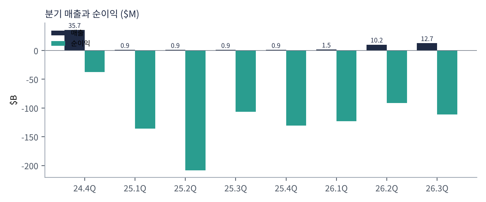
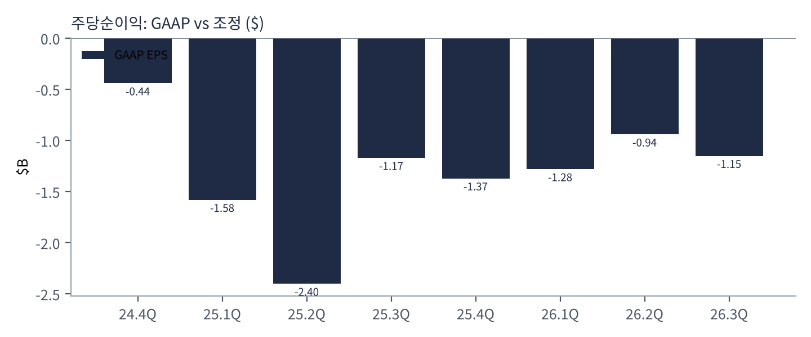
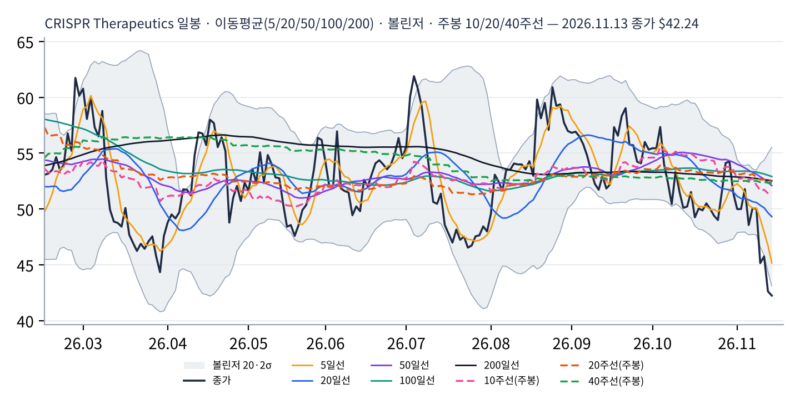
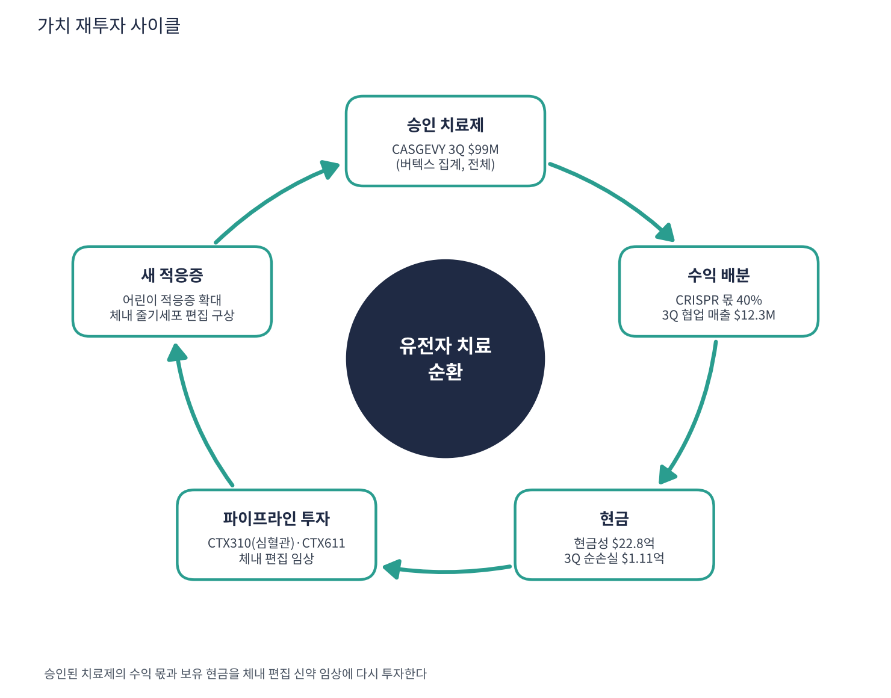

크리스퍼 테라퓨틱스는 유전자 가위(CRISPR)로 병을 고치는 치료제를 개발하는 스위스계 바이오 회사다. 첫 제품 카스제비(겸상적혈구증·베타지중해빈혈 치료)를 버텍스와 함께 판매한다. 첫 제품이 팔리기 시작했지만 연구비가 커서 아직 큰 적자인 회사다.
| 항목 | 내용 |
|---|---|
| 종목 | CRISPR Therapeutics (CRSP) · NASDAQ · 유전자 편집 · 본사 스위스 주크 |
| 밸류에이션 | PER 적자 · P/S 163.8배 (11/13 종가 $42.24) |
| 최근 분기(3Q26) | 협업 매출 $12.7M, 순손실 $111.4M |
| 카스제비 | 3Q 전체 매출 $0.99억(+30% QoQ, 전년 약 6배), 환자 750명 이상(버텍스와 6:4 배분) |
| 파이프라인 | CTX310 RMAT 지정, CTX611 2상 등록 완료(보도) |
| 현금·부채 | 스캐너: 현금 $22.8억, 차입금 $7.8억, TTM 잉여현금 −$3.77억 |
| 직책 | 인물 | 역할·특징 |
|---|---|---|
| CEO | 사마르스 쿨카르니 | 공동창업자. 카스제비 출시와 생체내 편집 파이프라인 강조 |
| 이슈 | 임원 교체 | 경영진 이탈이 보도됨(보도) |
경영 스타일: '카스제비로 현금을 벌고 생체내 편집으로 시장을 넓히는 이중 전략'. 현금 $22.8억으로 수년치 연구비는 버틴다는 입장이다. 매출 대부분은 버텍스와 나누는 협업 구조라 직접 판매 매출은 아니다.
환자 세포를 꺼내 고치는 방식(카스제비)과 몸 안에서 바로 고치는 방식(CTX310)을 함께 개발한다.
콜레스테롤·당뇨·자가면역 등으로 대상을 넓히는 것을 목표로 한다.
다음 실적발표는 세 가지 질문에 답하는 자리다.
1. 협업 수익이 이번 분기에 개선되나?
2. 악재 '임상 위험' 부담이 줄어드나?
3. 악재 '추세 약세' 부담이 줄어드나?
한 줄 판정 규칙: 첫 질문의 협업 수익이 좋아지면 약한 고리가 풀리고, 그렇지 않으면 현재 사이클의 약점이 그대로 남는다.
일정: 다음 발표일은 확인 필요(이번 분기 발표 후 일정 미확정). 위 현재값은 이 보고서의 기존 숫자다.
| 분기 | 매출 ($M) | 순이익 ($M) | EPS | 조정 EPS | 특이 사항 |
|---|---|---|---|---|---|
| 2024.4Q | 35.7 | -37.3 | -0.44 | – | |
| 2025.1Q | 0.9 | -136.0 | -1.58 | – | |
| 2025.2Q | 0.9 | -208.5 | -2.40 | – | |
| 2025.3Q | 0.9 | -106.4 | -1.17 | – | |
| 2025.4Q | 0.9 | -130.6 | -1.37 | – | 4분기 값 근사* |
| 2026.1Q | 1.5 | -122.9 | -1.28 | – | |
| 2026.2Q | 10.2 | -91.2 | -0.94 | – | 카스제비 매출 반영 시작 |
| 2026.3Q | 12.7 | -111.4 | -1.15 | – | 카스제비 합계 $0.99억(+30% QoQ), 협업 매출 $0.13억 |


* 4분기 값은 '연간 − 1~3분기 합' 근사치. 2024년 4분기 매출 $0.36억은 일회성 협업 수익으로 보인다(확인 필요). 조정 EPS를 따로 발표하지 않아 조정 EPS 열은 '–'로 둔다(트레이딩뷰 Reported가 GAAP와 같음).
흐름 요약: 매출은 2025년 분기당 $0.09억 수준에서 2026년 3분기 $1.27억으로 올랐다. 순손실은 분기 $0.9~2.1억 범위에서 3분기 $1.11억이다. 분기 설비투자는 구하지 못했다.
| 항목 | 3Q26 | 비고 |
|---|---|---|
| 협업 매출 | $0.13억 | 버텍스 배분 반영 |
| 카스제비 전체 | $0.99억 | +30% QoQ, 전년 약 6배 |
| 환자 수 | 750명 이상 | 누적 |
카스제비 전체 매출은 크리스퍼 장부 매출보다 크다. 배분율(6:4)과 비용 정산 때문이다. 부문·지역 비중은 구하지 못했다.
크리스퍼는 '유전자 편집의 첫 상업 승리자'에서 '일반 질환 치료'로 넓히려 한다.
| 축 | 최근 움직임 |
|---|---|
| 상업 | 카스제비 확대, 환자 750명 이상 |
| 생체내 편집 | CTX310 RMAT, CTX611 2상 등록 완료 |
| 위험 | 경영진 교체, 임상 결과 불확실 |

| 이동평균 | 값 | 종가 대비 | 해석 |
|---|---|---|---|
| 5일선 | $45.16 | -6.5% | 현재가가 아래 |
| 20일선 | $49.31 | -14.3% | 현재가가 아래 |
| 50일선 | $52.09 | -18.9% | 현재가가 아래 |
| 100일선 | $52.91 | -20.2% | 현재가가 아래 |
| 200일선 | $52.53 | -19.6% | 현재가가 아래 (-20%) |
주봉 흐름: 52주 고점 $63.5(2026.7.6) 이후 하락해 2026.11.13 저점 $41.75를 찍었다. 현재가 $42.2는 모든 이동평균선 아래다.
| 규칙 | 기준 | 현재 값 | 신호 |
|---|---|---|---|
| 장기 추세 필터 | 종가 vs 200일선 | $42.24 < $52.53 | 매도 |
| 중장기 교차 | 50일선 vs 200일선 | $52.09 < $52.53 | 매도 |
| 단기 교차 | 20일선 vs 50일선 | $49.31 < $52.09 | 매도 |
| 돈키언 채널 | 55일 고가 $60.72 / 저가 $41.75 | 중간값 $51.23 아래 | 매도 |
| 1개월 모멘텀 | 21거래일 수익률 | -18.0% (기준 $51.52) | 매도 |
| 3개월 모멘텀 | 63거래일 수익률 | -22.2% (기준 $54.28) | 매도 |
| 6개월 모멘텀 | 126거래일 수익률 | -12.7% (기준 $48.41) | 매도 |
| 12개월 모멘텀 | 252거래일 수익률 | -19.1% (기준 $52.19) | 매도 |
| 종합 (8개 평균) | -1.00 | 강한 매도 |
해석: 8개 신호 중 매수 0개, 매도 8개(점수 -1.00, 강한 매도)다. 14일 ATR $2.87 (6.8%).
| 가격·조건 | 무엇이 바뀌나 | 의미 |
|---|---|---|
| $52.53 돌파 | 200일선 | 매도 → 매수 |
| 50일선이 200일선 위로 | 50/200 교차 | 매도 → 매수 |
| 20일선이 50일선 위로 | 20/50 교차 | 매도 → 매수 |
| $51.23 돌파 | 돈키언 중간값 | 매도 → 매수 |
| $51.52 돌파 | 1개월 기준가 | 매도 → 매수 |
| 구분 | 가격대 | 근거 |
|---|---|---|
| 저항 1 | $45.2 ~ 49.3 | 5일선 $45.2, 20일선 $49.3 |
| 저항 2 | $52.1 ~ 52.9 | 50·200·100일선 밀집 |
| 지지 1 | $41.75 | 52주 저점(11/13) |
| 지지 2 | 추가 하단 없음 | 저점 이탈 시 신저점 |
전 신호가 매도(−1.0)이고 저점 바로 위다. 반등 확인(5일선 $45.2 회복) 전에는 비중을 두지 않는다. 종가로 $41.75를 내주면 하락이 이어질 수 있어 정리한다. CTX310 데이터가 재료다.
| 악재 요인 | 내용 | 강도 |
|---|---|---|
| 대규모 적자 | TTM 잉여현금 −$3.77억 | 중간 |
| 경영진 교체 | 임원 이탈 보도 | 중간 |
| 임상 위험 | CTX 계열 결과 불확실 | 높음 |
| 추세 약세 | 52주 저점 갱신 중 | 높음 |
| 티커 | 회사 | PER(TTM) | PEG | P/S | EPS 성장(YoY) |
|---|---|---|---|---|---|
| CRSP | 크리스퍼 테라퓨틱스 | 적자 | – | 163.80배 | – |
| BEAM | 빔 테라퓨틱스 | 적자 | – | 17.20배 | +76% |
| NTLA | 인텔리아 | 적자 | – | 28.00배 | +22% |
| VRTX | 버텍스 | 34.6배 | 3.65 | 10.63배 | +10% |
BEAM·NTLA·CRSP는 적자라 PER·PEG가 없다. BEAM·NTLA의 성장률은 요약 값이며 스캐너 기준이다.
크리스퍼는 현금 $22.8억으로 연 $3.8억 안팎의 현금 소진을 약 6년 버틸 수 있는 구조다(내 계산). 단 연구비가 늘면 짧아진다.
| 지표 | 값 | 계산·출처 | 해석 |
|---|---|---|---|
| 현금 | $22.8억 | 스캐너 | – |
| 총차입금 | $7.8억 | 스캐너 | 순현금 약 $15.0억(내 계산) |
| TTM 잉여현금흐름 | −$3.77억 | 스캐너 | 현금 소진 속도 |
| 런웨이 | 약 6.0년 | $22.8억 ÷ $3.77억(내 계산) | 연구비 증가 시 단축 |
| 기준 | 값 | 비고 |
|---|---|---|
| P/S (TTM) | 163.8배 | 스캐너. 매출이 작아 의미 낮음 |
| 동종 | BEAM 17.2, NTLA 28.0, VRTX 10.6 | 스캐너 |
해석: 매출 기반 비교는 맞지 않는다. 현금 보유 규모가 판단 기준이다.
| 지표 | 값 | 판정 |
|---|---|---|
| PER | 적자 | 산출 불가 |
| EBITDA(TTM) | 약 −$5.00억 | 스캐너 |
| EV / EBITDA | 산출 불가 | EBITDA 마이너스 |
| 방식 | PER | EPS 성장률 | PEG | 판정 |
|---|---|---|---|---|
| 트레이딩뷰 (GAAP TTM) | 적자 | – | – | PER가 없어 산출 불가 |
판정: PEG 산출 불가. 적자 기업이라 런웨이와 파이프라인 성과로 본다.

크리스퍼의 사이클은 카스제비 판매 → 협업 수익 → 연구 재투자 → 파이프라인 진전 → 새 적응증이다. 매출이 연구비를 메우지 못해 현금 보유가 고리를 지탱한다.
| 고리 | 현재 숫자 | 고리 강도 | 약해지는 신호 |
|---|---|---|---|
| ① 카스제비 판매 | 3Q 총 $0.99억, 환자 750명+ | 보통 | 환자 등록 둔화 |
| ② 협업 수익 | 3Q $0.13억 | 약함 | 배분 정산 변동 |
| ③ 연구 재투자 | TTM 잉여현금 −$3.77억 | 보통 | 비용 증가 |
| ④ 파이프라인 | CTX310 RMAT, CTX611 2상 | 보통 | 임상 실패 |
| ⑤ 현금 보유 | $22.8억 | 강함 | 소진 가속 |
구조: ⑤만 강하고 ②는 약하다. 판매가 연구비를 얼마나 메우는지가 확인 지점이다.